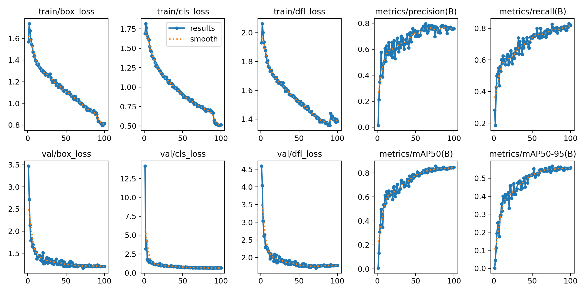

What it does
The proboscis monkey lives only on Borneo and is listed as Endangered. Monitoring a reserve means watching hours of footage to see when and where the monkeys appear. This project trained a detector so that footage can be searched automatically.
The final model on six test photos at confidence . Blue boxes are its detections; amber boxes are monkeys it missed. Across all test photos it found every monkey with no extra box on , missed at least one monkey on , and found every monkey but added an extra box on .
Final model on the test set
: YOLO11m started from COCO weights. Scored on test photos with monkeys that no run trained on or was chosen with.
The dataset
772 photos labelled by hand in Roboflow with one class, proboscis monkey, plus 258 validation and 257 test photos. Five versions of the dataset were exported. Each later version adds augmented copies of the same 772 photos, which grows the training set to 983, 1,353, 1,544 and finally 2,316 images; the last version's copies use flips, 90° rotations and up to 5% changes in brightness and exposure. The validation and test photos and their labels are identical in every version, so every run can be compared on them.
Six training runs, one test set
Validation mAP50 is what each run logged during training, under its own settings. Test mAP50 is every run re-scored on the shared test photos with the same settings: NMS IoU 0.7, image size 640.
| Run | Training images | Starting weights | Best epoch | Validation mAP50 (logged) | Test mAP50 | Test mAP50-95 | Precision | Recall |
|---|
What the experiments showed
More copies of the same photos did not help
Growing the training set from 772 to 2,316 images moved test mAP50 only between and , because every added image is a copy of one of the same 772 photos. The next gain has to come from newly labelled photos.
Pre-trained weights converged faster, not higher
Started from COCO weights, Model3 reached its best validation score at epoch ; the runs from scratch needed epochs. On the test set they score about the same. Model3 also changed other settings (dropout 0.9, learning rate 0.001, copy-paste 0.5), so the speed-up cannot be put on the weights alone.
One setting made the best model look like the worst
Model3 and Model3.2 were trained with NMS IoU 0.9, which keeps overlapping duplicate boxes, so their validation mAP50 during training was the lowest of the six. Scored again on the same validation photos at the default 0.7, Model3 goes from to and is the best run on the test set. Runs can only be compared under the same evaluation settings.
Training curves of the final model

100 epochs. The validation curves were computed at NMS IoU 0.9, so they sit below the test scores above.
Limitations and next steps
The model knows one class. It has not been tested on other primates that share the habitat, such as macaques, so false alarms on them are unmeasured. Each frame is scored on its own, so a monkey that stays in view for a minute is found again in every frame rather than counted once.
- Label more new photos instead of making more copies of the same ones.
- Track monkeys across frames, so the system can count individuals and log when each one appears.
- Add photos of other primates to measure and reduce false alarms.
Who built what
- Labelling the dataset and training every model: weikang14, as a project at work
- This page, re-scoring the runs on one test set and picking the example detections: built with Claude Code, an AI coding assistant